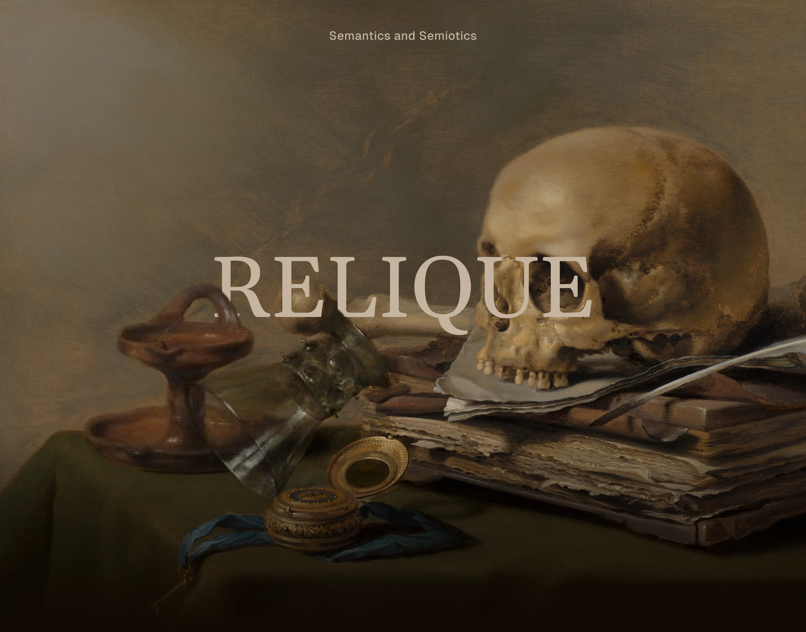
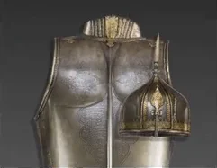
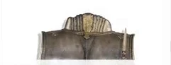
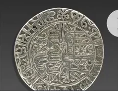
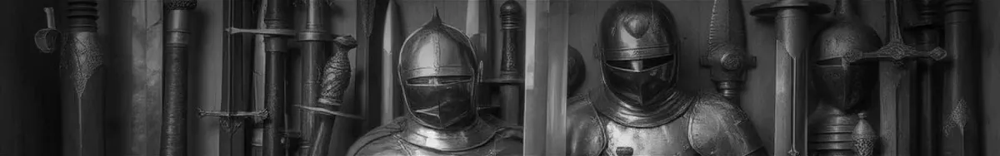
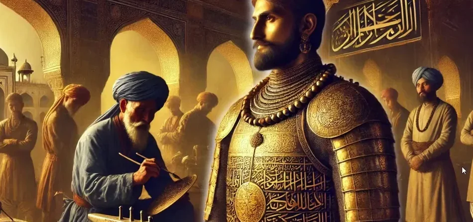
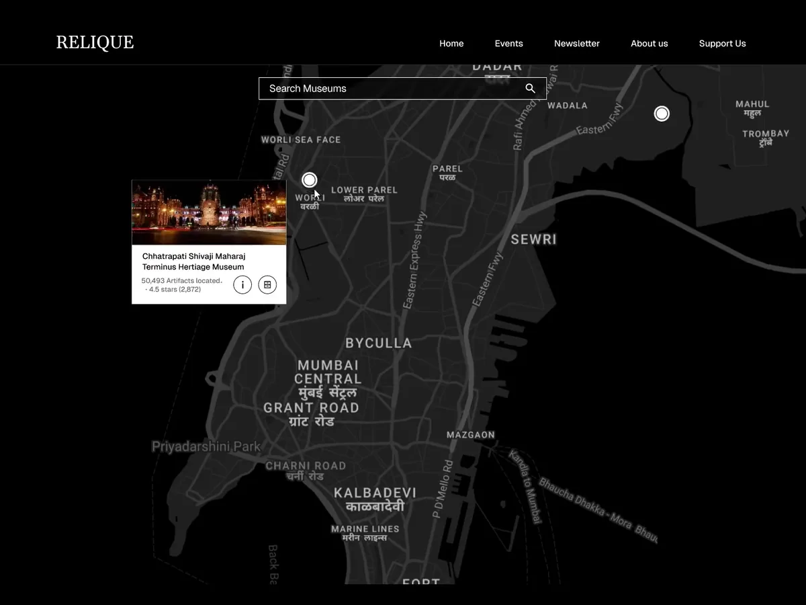
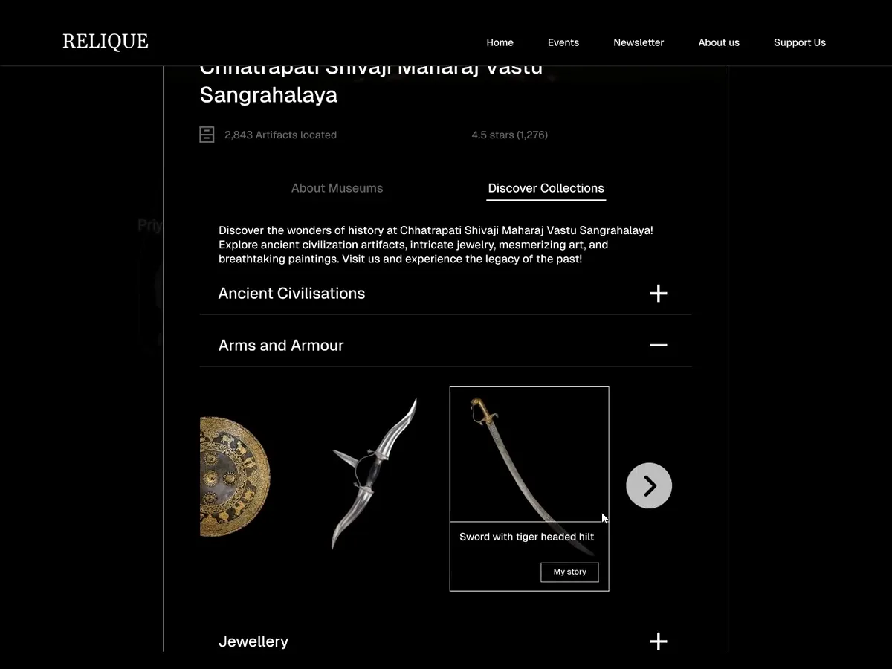
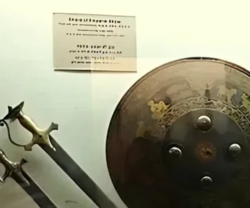

A museum label gives you a name and a date. The object is right there, but its story stays behind the glass.
Each artifact tells its own story, in the first person, with images, text and voice. Getting to one takes three moves. Try them on the armour.
Personal Armour
Of Emperor Akbar


Discover the untold journey of Akbar’s armor—from the royal workshops of Agra to the battlefields where it protected one of history’s greatest emperors.
Battle sword
of Tipu Sultan
Venugopal Ganesh
and a saint
Rupiya of
Sher-Shah-Suri



Step into the legacy of the Mughal Empire at CSMVS, Mumbai, and explore the grandeur of Emperor Akbar’s personal armor, a masterpiece of 16th-century craftsmanship. This exquisite armor, including a gold-adorned helmet, steel cuirass with Persian inscriptions, and arm guards featuring delicate koftgari work, showcases the fusion of Persian, Central Asian, and Indian influences in Mughal weaponry. Learn about Akbar’s direct involvement in designing this armor, documented in the Ain-i-Akbari, which highlights its symbolism of divine protection and intellectual depth. Experience this rare artifact of military and artistic brilliance through interactive exhibits at CSMVS and step into the rich history of the Mughal Empire.
A map of museums leads to their collections, which open and close like drawers. Every artifact inside has its own story.


Used the same way everywhere on the site, they carry what a label would otherwise have to spell out.
People and objects in a scene light up on hover and open their own stories. From the armour alone, four more begin.
Emperor Akbar (1542-1605), the third Mughal emperor, was a visionary ruler known for his military conquests…
Discover the storyAkbar’s sword was a finely crafted weapon with curved blade, intricate engravings, and ornate hilt…
Discover the storyRaja Man Singh I was a trusted commander in Akbar’s army, leading many successful campaigns…
Discover the story
Akbar’s sparring set was likely custom-made, adorned with Mughal craftsmanship, and designed for both training, and demonstration…
Discover the storyFrom the home page to the armour’s story, then the museum map and a second story. Jump to any part.
The research, the models and every slide of the case study, on one page.